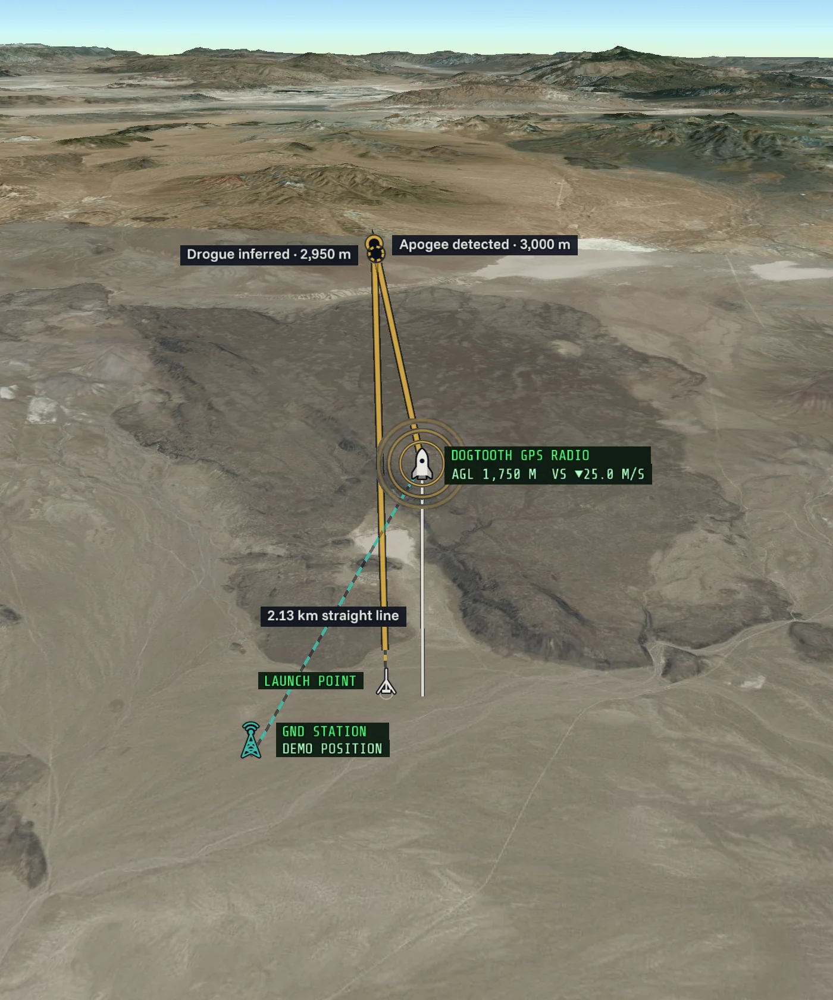
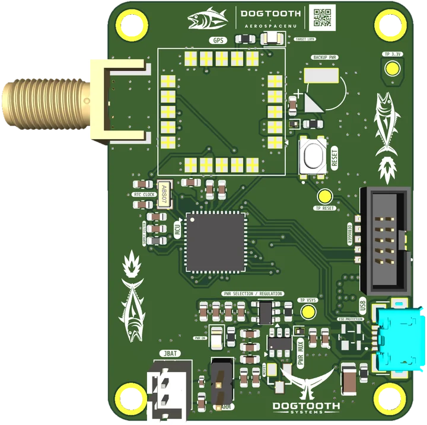

Flight Console
The Flight Console is the exact screen I'll use on launch day to watch live data from my rocket. The buttons below open that same tool. I don't keep a separate demo version.
Today it reads my Dogtooth board over Universal Serial Bus (USB) on the bench and replays saved flights. Live flight data will come in through Manta, my ground station, which I'm still building.
Reading a board live needs Chrome or Edge on a computer.

Imagery and terrain from Cesium ion
Imagery: Bing Maps, © 2026 Microsoft Corporation, © Mapbox, Earthstar Geographics SIO, © Maxar, © CNES (2026) Distribution Airbus DS.
Terrain: Data available from the U.S. Geological Survey, © CGIAR-CSI, Produced using Copernicus data and information funded by the European Union - EU-DEM layers, Data available from Land Information New Zealand, Data available from data.gov.uk, Data courtesy Geoscience Australia.
From the rocket to my screen
On launch day, the board in the rocket gets its position from the Global Positioning System (GPS) and sends it down over a long range (LoRa) radio. Manta picks it up on the ground and passes it to my laptop, where the Flight Console shows it.
-

Dogtooth board
- SAMD21 microcontroller (MCU)
- u-blox SAM-M8Q GPS
- E22 LoRa radio
- 915 MHz LoRa radio link
-
Manta ground station
In progress
- USB or Bluetooth
-
Flight Console
In the browser on my laptop
What I built
I built the Flight Console, and it runs in the browser. Live data and saved flights share one page. There's one Connect button. The console looks at the first lines that come in to tell what's plugged in. Today that's my Dogtooth board, and I've left a spot in the code for Manta.
On the bench, the board prints a status block once a second. The console reads it over Web Serial at 115,200 baud and groups the readings the way the board does, under GPS, GPS motion model, and radio.
- GraphsThey show altitude, connected satellites, lock quality, GPS data rate, and radio packets sent and errors over the last 10 minutes.
- Lost blocksEach block has a heartbeat number. When the number jumps, the console counts the blocks it missed.
- Saving the dataOne button saves every block as a comma-separated values (CSV) file, with a column for any errors the board printed.
- 3D replaySaved flights play back on a satellite map or in a 3D view drawn with CesiumJS on real terrain.
- Flight eventsA detector marks events like liftoff, apogee, and landing. Each one says whether the board reported it, the console detected it from altitude, or the console inferred it from the descent rate.
- Packet checksThe parser decodes my firmware's 34-byte radio packets and checks each one's checksum exactly the way the firmware does.
What's next
Right now I'm building Manta, the ground station that will pick up the board's radio packets and pass them to my laptop. The console already decodes those packets. Once Manta works, I'll use this same screen to watch live data from a real flight.
So far the only saved flight is a simulated one. I made it by running my board's firmware on a computer with a simulated GPS feed.